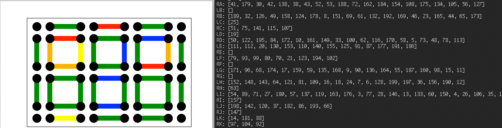
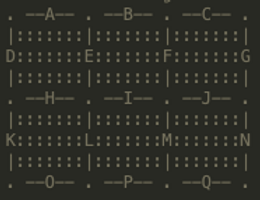

Here's a little project from the old days. The first part of this problem is a simulation I created when I was in the 10th grade to observe traffic. The second part of this project is an algorithm that finds the ideal spot to place a new road with the goal of alleviating traffic.
I wrote a program that simulated the movement of cars through 6 grids of two-way city roads. Cars would follow random paths that were consistent with lawful driving. This included waiting at stoplights for other cars with right-of-way and turning only onto certain roads. Seen in the image below, I implemented a graphic of the map to visualize the traffic. The color of the roads indicate the density, with red meaning heavy traffic and green meaning light to no traffic. On the right side of the image is a terminal window with arrays representing the locations of cars in their respective roads (mostly for debugging, but also quite informative).
The labels of the arrays (RA, LE, etc.) refer to the label of the road, and which side. RA refers to road A on the right side, LJ refers to road J on the left side. Below, is an ASCII representation of the map these cars drive on:
This simulation has been quite useful for me in terms of understanding traffic flow and how to solve this issue with the tools used for max-flow problems. A good amount of work I've done in the past few years has related to networks and graphs, and this problem falls right into it. For the second part of this project, I created an algorithm that uses linear programming to alleviate the traffic by adding n news roads. This project can be found on my GitHub.